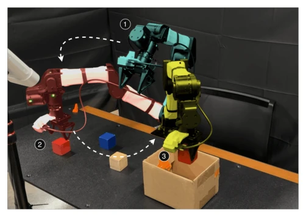
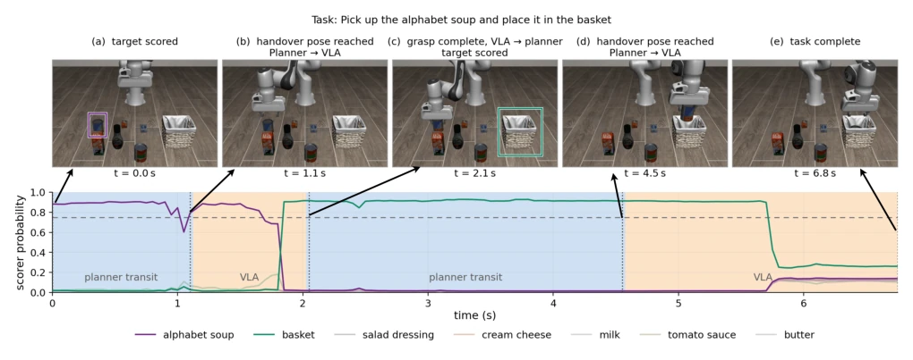
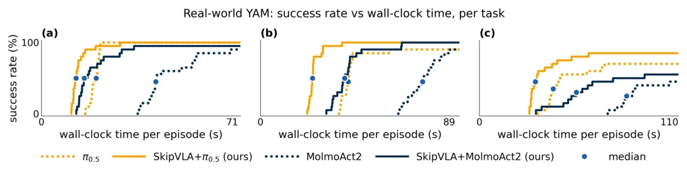

This paper performs a "weight loss surgery" on bloated VLA models, but only cuts off the fat (free space movement) while preserving the muscle (contact operation). The authors find that VLA spends most of its time "idling" in long-horizon tasks, so they offload this part to classical planners. The effect is indeed impressive, doubling speed and saving power, but a critique: this method currently only applies to simple tasks like "pick and place"; once involving complex interaction, that "switch" relying on gripper state switching is likely to fail. However, for teams wanting to save compute, this is practically a free performance improvement, just don't expect it to help you fix a toilet. Although this "fast when fast" idea is smart, decomposing tasks relies too much on preset rules, and flexibility is still compromised, after all, the real world is much more complex than gripper states in simulation environments.
Although VLA models can understand human language and execute complex tasks, inference latency is too high, especially in long-horizon tasks, where large amounts of time are wasted on "empty hand movement" [1, 2]. Existing acceleration schemes either cause performance degradation via distillation [3], or cause stale actions via asynchronous chunking [4], or require training from scratch via hierarchical architectures [5]. Although classical planners are fast and safe [6, 7], they lack semantic understanding and cannot directly generate target poses. Existing combination methods like VoxPoser [8] rely on zero-shot geometric optimization, making it difficult to handle contact dynamics. Therefore, there is an urgent need for a hybrid architecture that can reuse VLA semantic capabilities, simultaneously utilize planners to accelerate free space movement, and require no extra annotations. This is not just a speed issue, but a critical threshold for energy consumption and real-time performance, especially on edge computing devices.
SkipVLA adopts a modular hybrid strategy. The overall process is: first freeze the VLA's vision-language backbone, then use a lightweight Scoring Head to predict target objects and hover poses based on current observations and language instructions. Subsequently, a classical motion planner (such as VAMP or cuRoboV2) is responsible for planning the robot arm from the current position to the target pose, during which VLA does not intervene. When the robot arm reaches near the target and the gripper state switches (grasp or release), control is handed back to VLA to execute fine operations. Control switching is determined by the Indicator Module I, based on gripper state and pose distance. During the training phase, no extra data is needed; gripper events are directly extracted from expert demonstration trajectories as supervision signals to train the scoring head to recognize target objects. This design both preserves VLA's semantic understanding and utilizes planners to avoid high-frequency inference, achieving "fast when fast, slow when slow". The key lies in it not requiring retraining the entire policy, but rather using existing data to fine-tune the scoring head, greatly lowering the deployment threshold.

Fig. 1: Our hybrid method on a real-world pick-and-place task, shown at three points in time. White arrows are free-space transit executed by the planner module. (❶, cyan) From the start pose, the planning module predicts a hover target above the red block and moves the arm to it. (❷, red) The VLA expert module performs the grasp. When the gripper closes, control returns to the planner, which moves the arm to a predicted hover target above the box. (❸, yellow) The VLA expert places the block in the box.

Fig. 2: SkipVLA on a single LIBERO-Object episode. Top: five keyframes from one successful rollout of π0.5 + SkipVLA with the VAMP planner. (a) The scoring module selects a target object and pose. (b) VAMP’s plan is followed from start to target pose and control is handed over to VLA. (c) The VLA completes the skill of grasping and the control is handed over to SkipVLA which scores the next target. (d) VAMP’s plan is followed from start to target pose and control is handed over to VLA. (e) The VLA completes the skill of placing and task is marked complete. Bottom: the scoring module’s probability over all seven tracked object bounding boxes for the same episode, with background shading showing which policy holds control at each step: planner transit (blue) and VLA (orange). Control returns
Evaluated on the LIBERO simulation benchmark and real YAM robot arm. Comparison baselines include π0.5, SmolVLA, and MolmoAct2. Metrics cover success rate, time consumption, VLA call count, and energy consumption. Results show that SkipVLA, while maintaining or even improving success rate, shortened task completion time by 40%-60%, reduced VLA query count by about 30%-50%, and reduced Jetson Thor platform energy consumption by over 50%. Ablation experiments indicate that the indicator strategy based on gripper state is stable and effective. Notably, for SmolVLA which originally had a lower success rate, SkipVLA improved its success rate on LIBERO-Object from 39% to 82%, proving the effectiveness of reducing error accumulation. In real-world tests, even under multi-object tasks, this method significantly improved task completion efficiency, verifying its practical value in resource-constrained scenarios.
其他图片Other Figures

Fig. 4: Cumulative distribution of success rate (%) vs. wall clock (s) for 3 tasks across π0.5, MolmoAct2, π0.5 + SkipVLA and MolmoAct2 + SkipVLA measured across 20 trials per task. (a) put the red block in the box. (b) put both the red and blue blocks in the box. (c) stack the 3 blocks in a tower.